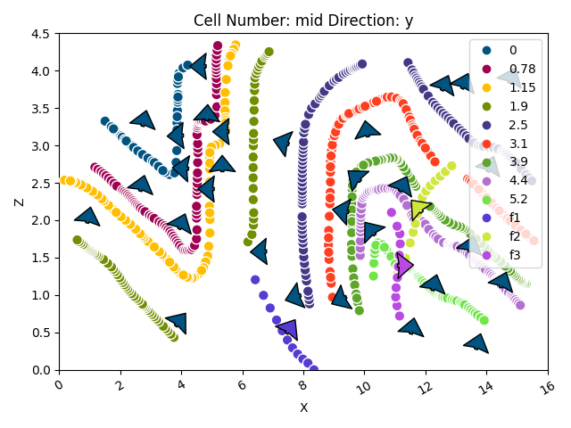

Note
Click here to download the full example code
Hecho¶
These two lines are necessary only if gempy is not installed
import sys, os
import urllib
os.environ["THEANO_FLAGS"] = "mode=FAST_RUN,device=cpu"
# Importing gempy
import gempy as gp
# Aux imports
import numpy as np
import pandas as pn
import matplotlib.pyplot as plt
Loading surface points from repository:¶
With pandas we can do it directly from the web and with the right args we can directly tidy the data in gempy style:
dfs = []
data_amount = 'Full'
# First stratigraphic data
for letter in range(1, 10):
try:
dfs.append(pn.read_csv('https://raw.githubusercontent.com/Loop3D/ImplicitBenchmark/master'
f'/Hecho/{data_amount}/H' +
str(letter) + '.csv', sep=';',
names=['X', 'Y', 'Z', 'surface', '_'], header=0))
except urllib.error.HTTPError as e:
print(e, letter)
# Also faults
for f in range(1, 4):
fault_df = pn.read_csv('https://raw.githubusercontent.com/Loop3D/ImplicitBenchmark/master/Hecho/F' +
str(f) + 'Line.csv',
sep=';', names=['X', 'Y', 'Z'], header=0)
fault_df['surface'] = 'f' + str(f)
dfs.append(fault_df)
# We put all the surfaces points together because is how gempy likes it:
surface_points = pn.concat(dfs, sort=True)
surface_points.reset_index(inplace=True, drop=False)
surface_points.tail()
Now we do the same with the orientations:
orientations = pn.read_csv('https://raw.githubusercontent.com/Loop3D/ImplicitBenchmark/master/Hecho/Sparse/Dips.csv',
sep=';',
names=['X', 'Y', 'Z', 'G_x', 'G_z', '_'], header=0)
# Orientation needs to belong to a surface. This is mainly to categorize to which series belong and to
# use the same color
orientations['surface'] = 0
# We fill the laking direction with a dummy value:
orientations['G_y'] = 0
# Drop unecesary data point
orientations.drop([1, 3, 4], inplace=True)
orientations
Data initialization:¶
Suggested size of the axis-aligned modeling box: Origin: 0 -0.5 0 Maximum: 16 0.5 4.5
Suggested resolution: 0.05m (grid size 321 x 21 x 91)
geo_model = gp.create_model('Moureze')
geo_model = gp.init_data(geo_model, extent=[0, 16, -0.5, 0.5, 0, 4.5], resolution=[321, 21, 91],
surface_points_df=surface_points, orientations_df=orientations,
surface_name='surface',
add_basement=True)
Out:
Active grids: ['regular']
geo_model.orientations.df.at[5, 'surface']
Out:
0
We need an orientation per series/fault. The faults does not have orientation so the easiest is to create an orientation from the surface points availablle:
f_names = ['f1', 'f2', 'f3']
for fn in f_names:
fault_idx = geo_model.surface_points.df.index[geo_model.surface_points.df['surface'] == fn]
gp.set_orientation_from_surface_points(geo_model, fault_idx)
Now we can see how the data looks so far:
Out:
<gempy.plot.visualization_2d.Plot2D object at 0x7fccd1ea9970>
By default all surfaces belong to one unique series.
Out:
X float64
Y float64
Z float64
X_c float64
Y_c float64
Z_c float64
G_x float64
G_y float64
G_z float64
dip float64
azimuth float64
polarity int64
surface category
series category
id int64
order_series int64
smooth float64
dtype: object
We will need to separate with surface belong to each series:
gp.map_stack_to_surfaces(geo_model, {'Fault1': 'f1', 'Fault2': 'f2', 'Fault3': 'f3'})
However if we want the faults to offset the “Default series”, they will need to be more recent (higher on the pile). We can modify the order by:
geo_model.modify_order_series(4, 'Default series')
Lastly, so far we did not specify which series/faults are actula faults:
geo_model.set_is_fault(['Fault1', 'Fault2', 'Fault3'])
Out:
Fault colors changed. If you do not like this behavior, set change_color to False.
Now we are good to go:
gp.set_interpolator(geo_model, theano_optimizer='fast_run', dtype='float64')
Out:
Setting kriging parameters to their default values.
Compiling theano function...
Level of Optimization: fast_run
Device: cpu
Precision: float64
Number of faults: 3
Compilation Done!
Kriging values:
values
range 16.65
$C_o$ 6.6
drift equations [3, 3, 3, 3, 3]
<gempy.core.interpolator.InterpolatorModel object at 0x7fcb8b176eb0>
The default range is always the diagonal of the extent. Since in this model data is very close we will need to reduce the range to 5-10% of that value:
new_range = geo_model.get_additional_data().loc[('Kriging', 'range'), 'values'] * 0.2
geo_model.modify_kriging_parameters('range', new_range)
gp.compute_model(geo_model, sort_surfaces=True, compute_mesh=False)
Out:
Lithology ids
[10. 10. 10. ... 10. 9.99645237
8.09615495]
Time¶
GTX 2080 164 ms ± 2.03 ms per loop (mean ± std. dev. of 7 runs, 1 loop each)
gp.plot_2d(geo_model, cell_number=[10], series_n=3, show_scalar=True)
Out:
<gempy.plot.visualization_2d.Plot2D object at 0x7fcc3c7aaee0>
gp.plot_2d(geo_model, cell_number=[10], show_data=True)
Out:
<gempy.plot.visualization_2d.Plot2D object at 0x7fcb8b8b5970>
sphinx_gallery_thumbnail_number = 3
gp.plot_3d(geo_model, kwargs_plot_structured_grid={'opacity': 8})

Out:
<gempy.plot.vista.GemPyToVista object at 0x7fcc46b3f1f0>
Export data:¶
The solution is stored in a numpy array of the following shape. Axis 0 are the scalar fields of each correspondent series/faults in the following order (except basement):
For the surfaces, there are two numpy arrays, one with vertices and the other with triangles. Axis 0 is each surface in the order:
np.save('Hecho_scalar', geo_model.solutions.scalar_field_matrix)
def write_property_to_gocad_voxet(propertyfilename, propertyvalues):
"""
This function writes a numpy array into the right format for a gocad
voxet property file. This assumet there is a property already added to the .vo file,
and is just updating the file.
propertyfile - string giving the path to the file to write
propertyvalues - numpy array nz,ny,nx ordering and in float format
"""
propertyvalues = propertyvalues.astype('>f4') # big endian
# array = propertyvalues.newbyteorder()
propertyvalues.tofile(propertyfilename)
write_property_to_gocad_voxet(f'hecho_sf_gempy_{data_amount}',
geo_model.solutions.scalar_field_matrix[3].reshape([321, 21, 91]).ravel('F'))
4
Out:
4
Total running time of the script: ( 2 minutes 42.685 seconds)